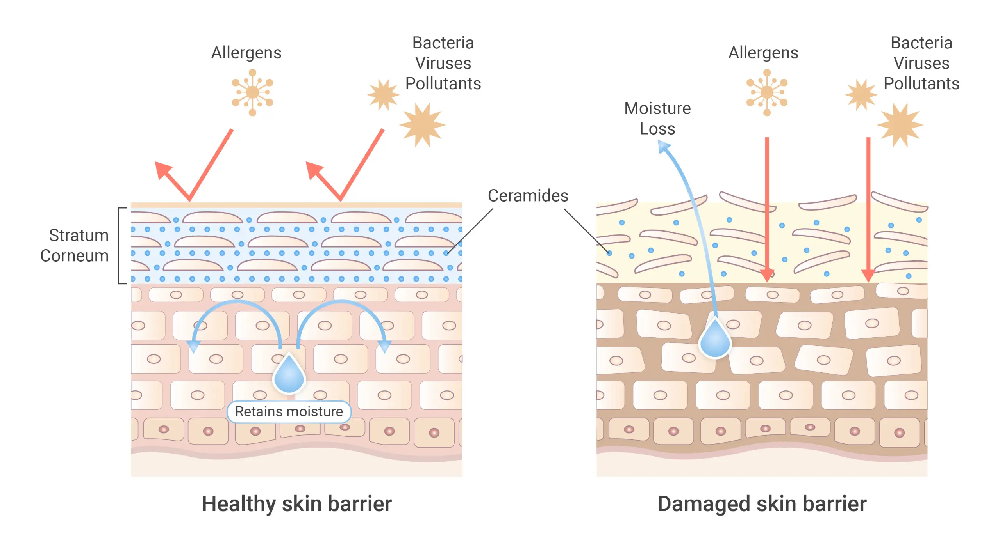

6 sai lầm chăm sóc da khiến da càng yếu đi
Nhiều người chăm da đều đặn nhưng da vẫn dễ nổi mụn, bong tróc hoặc nhạy cảm. Nguyên nhân thường nằm ở những sai lầm skincare mà bạn không để ý.
1. Rửa mặt quá nhiều lần trong ngày

Rửa mặt liên tục không giúp da bớt dầu mà ngược lại còn làm mất lớp dầu tự nhiên bảo vệ bề mặt da. Khi đó, da bị khô, căng và sẽ kích hoạt cơ chế tiết dầu nhiều hơn → dễ bít tắc lỗ chân lông và nổi mụn.
✔ Da dầu cũng không nên rửa quá 3 lần/ngày, tránh dùng sữa rửa mặt có độ làm sạch quá mạnh.
2. Tẩy da chết quá nhiều

AHA/BHA giúp loại bỏ tế bào chết, hỗ trợ làm sạch lỗ chân lông và cải thiện bề mặt da. Tuy nhiên, nếu lạm dụng (thoa nồng độ cao, dùng mỗi ngày) da dễ bị bong tróc, đỏ rát, châm chích và trở nên nhạy cảm hơn.
✔ Da nhạy cảm nên bắt đầu với nồng độ thấp và tần suất thưa (1 lần/tuần).
3. Lạm dụng treatment mạnh (Retinol, Acid)

Retinol, tretinoin hay các loại acid mạnh (AHA nồng độ cao, peel da…) có khả năng cải thiện mụn, nám, nếp nhăn. Nhưng nếu dùng dày, không có bước làm quen da, hàng rào bảo vệ da sẽ bị tổn thương, dễ kích ứng, bong tróc hoặc viêm đỏ kéo dài.
✔ Tăng dần tần suất sau 3–4 tuần khi da đã quen, không nên “vội vàng” mong da đẹp nhanh.
4. Không bôi kem chống nắng mỗi ngày

Tia UV là nguyên nhân chính gây lão hóa sớm, nám, tàn nhang và khiến skin barrier suy yếu. Dù bạn skincare 5 hay 10 bước nhưng bỏ qua kem chống nắng thì hiệu quả hầu như bằng 0, thậm chí da còn yếu đi theo thời gian.
✔ Bôi lại sau 2–3 giờ nếu hoạt động ngoài trời hoặc đổ nhiều mồ hôi.
5. Dùng quá nhiều sản phẩm cùng lúc

Layer quá nhiều bước (tẩy da chết, AHA, BHA, Retinol, Vitamin C, Niacinamide…) trong một routine không giúp da đẹp nhanh hơn mà còn khiến da “quá tải”, khó thích nghi. Khi đó, hàng rào da bị bào mòn, dễ kích ứng, nổi mụn li ti hoặc break-out toàn mặt.
✔ Nếu da đang yếu, hãy tối giản: làm sạch dịu – dưỡng ẩm – chống nắng, ưu tiên phục hồi.
6. Thay đổi sản phẩm liên tục

Da cần thời gian để thích nghi với sản phẩm mới (thường 3–6 tuần). Nếu bạn liên tục đổi sữa rửa mặt, serum, kem dưỡng chỉ sau vài ngày vì “chưa thấy hiệu quả”, da sẽ không kịp ổn định, dễ xuất hiện mụn và kích ứng.
✔ Khi thêm sản phẩm mới, nên thêm từng bước một để dễ theo dõi phản ứng của da.